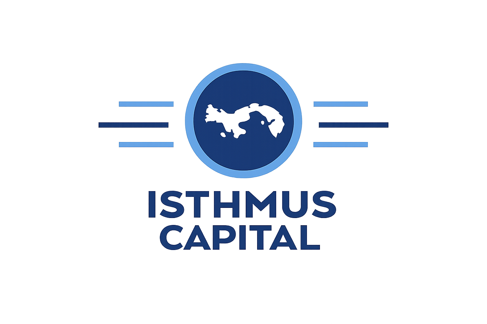
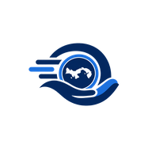
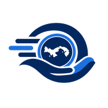

Página de prueba de los tokens (Brief 00, actualizada a la marca MP el 02-oct-2026). Todos los datos son ficticios (Ejemplo). Tipografía propuesta: Manrope, sujeta a la revisión en celular con Gianclaudio.
Logos
public/brand/mp-logo.png (PNG con fondo transparente). Sobre blanco.
public/brand/logo.png (FIC). Solo en inicio de sesión, pie de página y documentos, con el texto "Un producto de Financiera Isthmus Capital".Paleta de marca (medida del logo)
--mp-azul · primario
#02265E · 14.6:1--mp-azul-900 · pressed
#011A42 · 17.1:1--mp-azul-50 · tinte
#EAF0FA--mp-acento · activo, foco
#1B70DE · 4.75:1--mp-acento-700 · texto acento
#1457B3 · 6.9:1--mp-acento-100 · tinte acento
#DCEAFC--mp-acento-claro · sobre azul
#8DC0F7 · 7.6:1 sobre azulSemánticos y neutros
--mp-exito
#1F7A4D--mp-alerta
#B45309--mp-error
#B42318--mp-blanco
#FFFFFF--mp-gris-100 · fondo
#F4F6FA--mp-gris-200 · bordes
#E3E8F0--mp-gris-300 · decorativo
#C9D2DF--mp-gris-400 · inputs
#7F8A9C · 3.5:1--mp-gris-600 · secundario
#5B6472 · 6.0:1--mp-texto · principal
#16213A · 16.0:1Tipografía · Manrope
B/. 300.00 · 3xl 700
Tu solicitud fue aprobada · 2xl 600
Resumen de la solicitud · xl 600
Cuota quincenal · lg 600
Texto base 400. Cifras tabulares: 1,234.56 y 9,876.54 alinean en columnas.
Texto secundario sm · --mp-gris-600
Pie legal xs · Un producto de Financiera Isthmus Capital, Panamá.
Botones e inputs
Estados del préstamo · mapeo estado → token
Current · --estado-current Due Today · --estado-due-today Missed Repayment · --estado-missed Arrears · --estado-arrears Past Maturity · --estado-past-maturityTarjeta de ejemplo
Préstamo MP · Ejemplo · NUC 000000
B/. 172.00
Total a pagar · 6 cuotas quincenales
MontoB/. 100.00
Cuota quincenalB/. 28.67
Primer descuento10-oct-2026
EstadoCurrent
Íconos provisionales de la PWA


Recortados del PNG con scripts/brand/make-icons.py. Se reemplazan cuando llegue el SVG oficial.